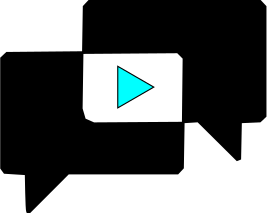

<nav class="nav has-shadow" id="top">
    <div class="container">
        <div class="nav-left">
            <div class="content is-large">
                <a class="nav-item is-primary" routerLink="/home">
                    <!--href="https://dansup.github.io/bulma-templates/index.html"-->
                    
                    <!--<p style="font:Abel">-->
                    <span>&nbsp;</span>
                    <span><strong>Rely</strong></span>
                    <span style="color: darkturquoise;">Tube</span>
                    <!--</p>-->
                </a>
            </div>
        </div>
        <div class="nav-right nav-menu">
            <a class="nav-item is-tab" href="https://github.com/Louishancquart/hoaxtube" routerLinkActive="is-active">
                <i class="fa fa-github"></i>
                &nbsp;Git
            </a>
            <a class="nav-item is-tab" routerLink="/donate" routerLinkActive="is-active">
                <i class="fa fa-btc"></i>
                &nbsp;Browser Plugin
            </a>
        </div>
    </div>

</nav>
